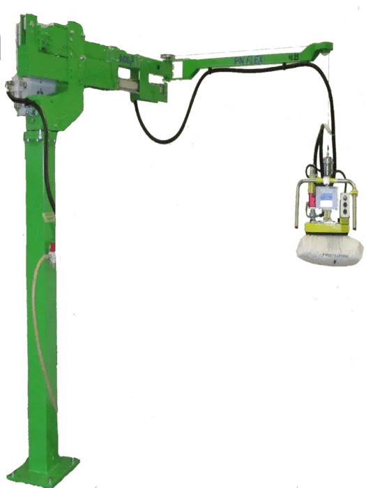
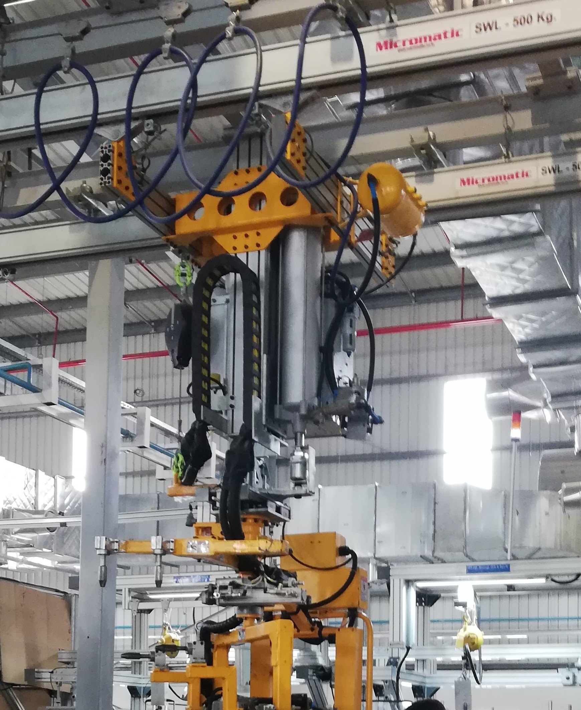

PN Ergo
Parallelogram-arm pneumatic manipulator available for column or overhead mounting, with standard or custom gripping tools.
View PN Ergo detailsTailor-made pneumatic material handling solutions for your application.
INDEVA PN Series manipulators use pneumatic drive and control. Select from articulated parallelogram-arm or rope-axis designs, with column or overhead mounting options depending on the model.
Standard or custom gripping tools can be selected for the load and handling process.
Discuss your applicationParallelogram-arm pneumatic manipulator available for column or overhead mounting, with standard or custom gripping tools.
View PN Ergo details
Overhead-mounted parallelogram-arm pneumatic manipulator with standard or custom gripping tools.
View PN Compatto details
Pneumatic manipulator with a rope on the vertical axis, available for column or overhead mounting and standard or custom gripping tools.
View PN Flex details
Compact parallelogram-arm pneumatic manipulator with standard or custom gripping tools.
View PN Zip details
Compact single-axis rigid-slide pneumatic lift for guided handling, including off-center loads.
View Z Lift detailsPN Series models can be designed for specified ATEX applications. Confirm the required configuration and applicable certification with INDEVA for each project.